turn "does this converge?" into an equation between two quantities that are already there, which is what the root test and every later oscillation argument need.
turn "does this converge?" into an equation between two quantities that are already there, which is what the root test and every later oscillation argument need.
If
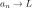
, then every subsequence of converges to
converges to
 .
.
Let  be a subsequence and
be a subsequence and
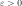
. Choose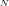
with for
for  . Since the indices are
strictly increasing, for every
. Since the indices are
strictly increasing, for every  , so
, so 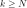
gives and hence .
and hence .
Let be a bounded sequence. The sequences
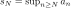
and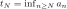
are well defined by completeness, decreasing and increasing respectively, and bounded. Their limits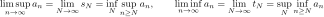
. Always
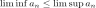
.
Let be bounded and
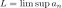
. Then for every we have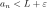
for all but finitely many , and
, and 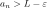
for infinitely many.
Fix . Since
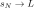
and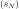
is decreasing, there is with , that is for every; only the finitely many terms before can
fail it. For the second claim, note 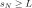
for every because decreases to. Given , the
characterisation of the supremum applied to
produces with
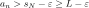
. As was arbitrary, such occur arbitrarily late.
A bounded sequence converges if and only if
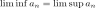
, and then the common value is the limit.Write and , so that
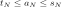
for every . If the two limits agree, the squeeze theorem gives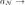
that common value.Conversely let and . Choose with
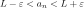
for. Then
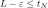
and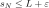
, so both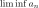
and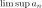
lie in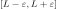
. As was arbitrary they both equal
.
was arbitrary they both equal
.
The first half of the characterisation is the form used in practice:
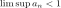
means the terms are eventually below some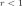
, which is exactly the hypothesis the root test wants. Stating the root test with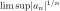
instead of a limit therefore costs nothing and drops the assumption that the limit exists.